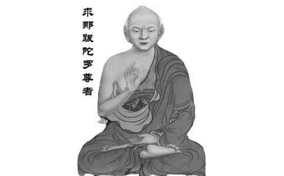

南朝刘宋时到中国来的印度高僧求那跋陀罗，他就是靠“换脑袋”来学中国话的，一夜之间就学会了。对，不出你所料，这又是一个浑身散发传奇色彩的和尚，毕竟，但凡高僧，他怎么可能只会念经嘛！
求那跋陀罗，中
求那跋陀罗去投大乘师父的时候，师父为了试试他和大乘的缘分，就让他在诸多经匣之中随意抓取，类似小孩抓周的游戏。求那跋陀罗抓了两部经，打开一看，一部是《大品般若经》，一部是《
学成后，求那跋陀罗就开始云游，有次在海上遇到风停水竭之难，他发动全船人同念观音，很快化险为夷。他的神异也就是从这里开始的。
刘宋元嘉十二年，公元435年，求那跋陀罗从广州登陆，来到了中国。宋太祖把他迎请到京城建康（南京）供养，一时贵胄盈门，风光无限。在当时中国义学僧们的协助下，他译出了《
求那跋陀罗直到那时为止也不怎么通达汉语，他译经是靠传译，然后通过往还问答、反复核对再定稿。但是刘义宣对仅仅阅读翻译过来的经典已经感到不满足了，所以他就请求那跋陀罗讲解《华严经》。请法者位高权重，这当然是一个硬性任务，不可能推诿。但求那跋陀罗并不怎么会讲汉语，单靠传译，他又觉得不能完全表达，情急之下，他就还是那招：求观音。
有用吗？有用。
求那跋陀罗日日夜夜地求
元嘉末年，南谯王刘义宣老做怪梦，求那跋陀罗预言说，京城要出祸乱了。果然，不久文帝被太子刘劭所杀，刘劭又被兄弟刘骏所杀，刘骏即帝位，就是宋孝武帝。后来，刘义宣不知道是怎么想的，忽然就要起兵造反。求那跋陀罗知道事必不成，但苦劝无果，还被刘义宣逼着跟造反的部队一起走。结果梁山大败，刘义宣自刎身亡。
当大败之时，求那跋陀罗所在的战船离岸很远，他又不会水，根本逃不走。万般无奈，老办法：求观音。求那跋陀罗一边称念观音
刘义宣战败了，但孝武帝对求那跋陀罗仍然很倾慕，客客气气地让人把他送到京城。后来求那跋陀罗和刘义宣之间十年的往来书信被发现，无一字涉及军事，证明他确实没有参与叛乱，于是更加受到孝武帝的礼遇。有一次孝武帝跟他开玩笑说：“你还想不想丞相（刘义宣）呀？”求那跋陀罗当即回答：“我受他供养十年，怎么能忘记他的恩德？希望陛下允许我为他
但皇帝总是不太好伺候的。大明六年，刘宋出现了大旱，祭祀山川好几个月，一点用也没有。于是孝武帝给求那跋陀罗下了个不讲理的死命令：去求雨！要是求不下来，你就别回来见我了。求那跋陀罗也很硬气：好，求不下来我就不回来。当然，三下五除二他就把这雨给求下来了。
求那跋陀罗的神异多了去了，比如他还会驱鬼，这对他来说不过雕虫小技。他大部分的人生都在陪伴刘宋的统治者们，为他们预言，为他们占卜，为他们摆平自然灾害，安慰帝王们的心情，活得就像一个中国人传统印象中的“高僧”一样。但这些神异却多少有些掩盖了求那跋陀罗在
泰始四年，公元468年，求那跋陀罗感到自己不行了，于是他便向王公大臣们告别。临终的那一天，求那跋陀罗久久地望着天空，他看到了天上缤纷而落的花朵和诸佛的慈颜。安然而逝的求那跋陀罗译师，终年七十五岁。